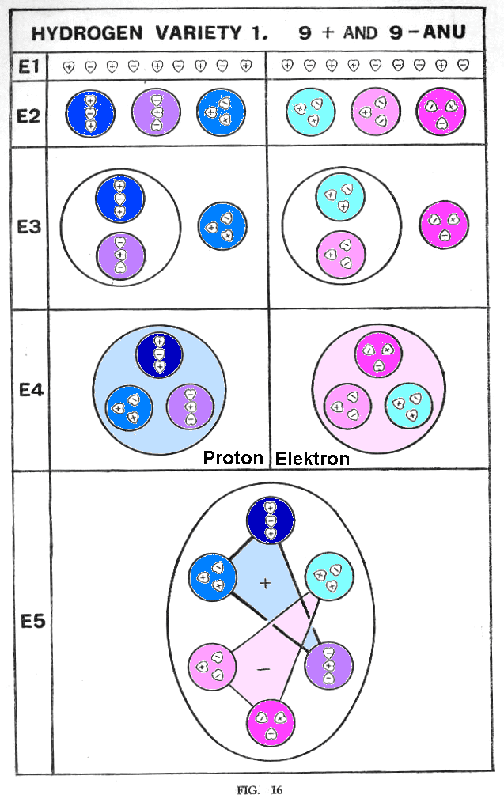
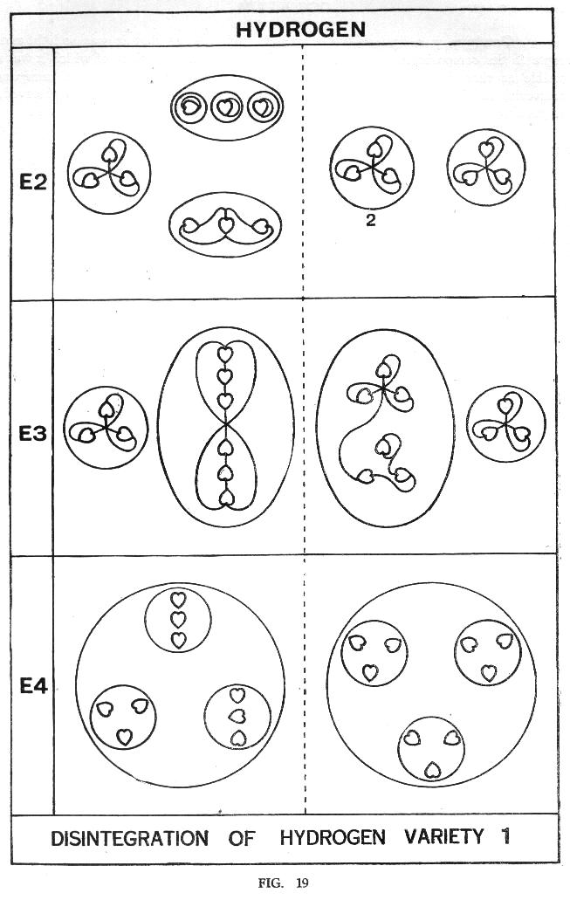

|
Uratome-ChemieGoogle Engl.-->Deutsch-ÜbersetzungÜbersetzung Englisch --> Deutsch ist (mit vorherigem Link) aktivierbar ! Verlinkte Texte sind in Englisch Vorsicht, erst lesen, bevor Sie hier klicken: Gefälschte Virenwarnung über Werbeanzeigen W I C H T I G S T E S D O K U M E N T ! ! ! Okkulte Chemie 1950 (Leadbeater, Besant, Jinarajadasa): TPH_OCIN TPH_OC01 | TPH_OC02 | TPH_OC03 | TPH_OC04 | TPH_OC05 | TPH_OC06 | TPH_OC07 TPH_OC08 | TPH_OC09 | TPH_OC10 | TPH_OC11 | TPH_OC12 | TPH_OC13 | TPH_OC14 TPH_OCCO TPH_OCAP Weiteres Link zum gesamten Buch als pdf, fotografiert Volltext-Suche in automatisch erzeugter deutscher Übersetzung |
|
My (Gabi Müller) interpretation of physics terms: All pink marked vertebrae in the right column are candidates for the term "electron" because they rotate antiglobal and are more soluble / dissociable than all the blue ones. E4 right column: This makes the (light pink) vortex also almost massless when it occurs alone. In E2 left / blue we have the quarks of nuclear physics before us. The location of the electron in the hydrogen shell speaks for the entire structure in E4 right, because E2 and E3 have only core reach. Free conduction electrons, which are detachable at the cathode, will presumably assume this form. Only in groups of three are they still charged and stable, and for E1 to E3 probably the cathode temperature is not enough (with too coarse, unbiological surface that does not focus on hot thin Kirlian strings). I also assume that plus and minus uratoms have not the same mass, but 18 (mixed) together add up to a core mass unit. The second type of hydrogen does not occur individually, but in every water molecule. It is positively charged by itself and is certainly at the south pole of the H2O vortex. More here vivavortex.wordpress.com/2017/08/02/dimensionen/   zurück zu www.torkado.de |